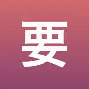

Learning Japanese – particles, counters, forms, keigo
Material taken from the free part of the family's apps: particles, counters, verb forms, casual speech and keigo.
Everything here is free. You can learn without an app, too.
- Grammar drills for the JLPT

JLPT practice: N5 N4 N3 N2 N1- Verbs, adjectives and drills
- Counting, kanji and drills
- Anime, drama and slang
- Formal Japanese for work
- Manga and anime vocabulary
Grammar drills for the JLPTfrom Joshi
Joshi ›Japanese particles: は, が, を, に, で, へ
The particles that carry an ordinary Japanese sentence, and the roles they stand in – with examples and translations.
JLPT practice: N5 N4 N3 N2 N1from Kaname
Kaname ›Confusing pairs in Japanese: は or が, もう or まだ
Pairs that look interchangeable and are not – each sentence comes with the situation and the reason the other form fails.
Japanese N5 grammar – every point on the level
Seven groups of N5 grammar, from the sentence skeleton to tone – each point with its meaning, formation and examples.
Verbs, adjectives and drillsfrom Katsuyokei
Katsuyokei ›Japanese Verb Conjugation Chart: Masu, Te, Ta & Nai Forms
Conjugation chart for 書く, 食べる, する and 来る, the godan and ichidan rules, every form with an example, and practice with answers.
Counting, kanji and drillsfrom Kazoekata
Kazoekata ›Japanese Counters: 1–10 Charts, Readings and Examples
How to read 3本, 4人 or 8匹: 1–10 charts for つ, 人, 本, 枚, 匹 and 冊, the sound-change patterns, 22 counters with sentences and practice.
Anime, drama and slangfrom Kuzushi
Kuzushi ›Casual Japanese – the contractions in anime and conversation
The contractions you hear every day, each next to the full form it came from.
Formal Japanese for workfrom Keigo
Keigo ›Keigo – Japanese politeness in practice
Honorific and humble forms and the frames you lay over most words – what to say and why that one.
Sections (2)
Manga and anime vocabularyfrom Onomatope
Onomatope ›Japanese mimetics – the sounds in manga and anime
Words that imitate sound and state – what they mean and what 濁点 does to them.
No pages of their own yet: Bunmyaku, Shindan, Kifuku.